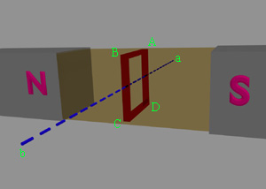
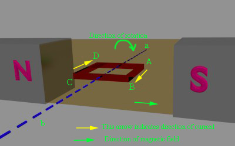
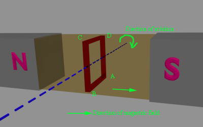
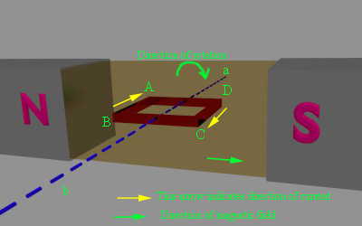
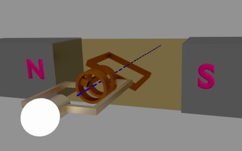

The working principle of alternator is very simple. It is just like basic principle of DC generator. It also depends upon Faraday's law of electromagnetic induction which says the electric current is induced in the conductor inside a magnetic field when there is a relative motion between that conductor and the magnetic field.
For understanding working of alternator let's think about a single rectangular turn placed in between two opposite magnetic pole as shown above.

Say this single turn loop ABCD can rotate against axis a-b. Suppose this loop starts rotating clockwise. After 90° rotation the side AB or conductor AB of the loop comes in front of S-pole and conductor CD comes in front of N-pole. At this position the tangential motion of the conductor AB is just perpendicular to the magnetic flux lines from N to S pole. Hence rate of flux cutting by the conductor AB is maximum here and for that flux cutting there will be an induced electric current in the conductor AB and direction of the induced electric current can be determined by Flemming's right hand rule. As per this rule the direction of this electric current will be from A to B. At the same time conductor CD comes under N pole and here also if we apply Fleming right hand rule we will get the direction of induced electric current and it will be from C to D.
Now after clockwise rotation of another 90° the turn ABCD comes at vertical position as shown below. At this position tangential motion of conductor AB and CD is just parallel to the magnetic flux lines, hence there will be no flux cutting that is no electric current in the conductor. While the turn ABCD comes from horizontal position to vertical position, angle between flux lines and direction of motion of conductor, reduces from 90° to 0° and consequently the induced electric current in the turn is reduced to zero from its maximum value.

After another clockwise rotation of 90° the turn again come to horizontal position and here conductor AB comes under N-pole and CD comes under S-pole, and here if we again apply Flemming's right hand rule, we will see that induced electric current in conductor AB, is from point B to A and induced electric current in the conductor CD is from D to C.
electric current generator" width="400" height="250" class="aligncenter size-full wp-image-12759" />
As at this position the turn comes at horizontal position from its vertical position, the electric current in the conductors comes to its maximum value from zero. That means electric current is circulating in the close turn from point B to A, from A to D, from D to C and from C to B. Just reverse of the previous horizontal position when the electric current was circulating as A → B → C → D → A.
While the turn further proceeds to its vertical position the electric current is again reduced to zero. So if the turn continues to rotate the electric current in the turn continually alternate its direction. During every full revolution of the turn, the electric current in the turn gradually reaches to its maximum value then reduces to zero and then again it comes to its maximum value but in opposite direction and again it comes to zero. In this way the electric current completes one full sine wave form during each 360° revolution of the turn. So we have seen how an alternating electric current is produced in a turn is rotated inside a magnetic field. From this, we will now come to the actual working principle of alternator.
Now we cut the loop and connect its two ends with two slip rings and stationary brush is placed on each slip ring. If we connect two terminals of an external load with these two brushes, we will get an alternating electric current in the load. This is our elementary model of alternator.

Having understood the very basic principle of alternator, let us now have an insight into its basic operational principal of a practical alternator. During discussion of basic working of alternator, we have considered that the magnetic field is stationary and conductors (armature) is rotating. But generally in practical construction of alternator, armature conductors are stationary and field magnets rotate between them. The rotor of an alternator or a synchronous generator is mechanically coupled to the shaft or the turbine blades, which on being made to rotate at synchronous speed Ns under some mechanical force results in magnetic flux cutting of the stationary armature conductors housed on the stator. As a direct consequence of this flux cutting an induced emf and electric current starts to flow through the armature conductors which first flow in one direction for the first half cycle and then in the other direction for the second half cycle for each winding with a definite time lag of 120° due to the space displaced arrangement of 120° between them as shown in the figure below. This particular phenomena results in 3φ power flow out of the alternator which is then transmitted to the distribution stations for domestic and industrial uses.
3 Phase Generated Voltage
 by
by